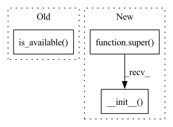

Pattern ID :23934
Before Change
self.pi = PolicyNetwork(self.state_dim, self.action_dim, self.discrete)
if torch.cuda.is_available() :
for net in self.get_networks():
net.to(torch.device("cuda"))
After Change
discrete,
train_config=None
) -> None:
super().__init__()
self.state_dim = state_dim
self.action_dim = action_dim
self.discrete = discreteIn pattern: SUPERPATTERN
Frequency: 3
Non-data size: 3
Instances Fragment ID: 74478295
Project Name: hcnoh/gail-pytorch
Commit Name: 836089783bca2f49d10d3de815a654b7ee0a2503
Time: 2021-11-16
Author: rhc0624@gmail.com
File Name: models/nets.py
M Class Name: Expert
N Class Name: Expert
M Method Name: __init__(5)
N Method Name: __init__(5)
M Parent Class: Module
N Parent Class:
M File Name: models/nets.py
N File Name: models/nets.py
M Start Line: 115
M End Line: 119
N Start Line: 113
N End Line: 113
Before Change
// pylint: disable=no-member
self.__device = torch.device("cpu")
else:
if torch.cuda.is_available() :
// pylint: disable=no-member
self.__device = torch.device("cuda:0")
else:After Change
be used for training predictions
random_state: (Integer) Random state for the device
super(Sequential, self).__init__( force_cpu, training_device, random_state)
// Initializing some attributes that we need to function
self.__layers = []
self.__build = False
Fragment ID: 74478296
Project Name: imdeepmind/neuralpy
Commit Name: 29099d61d9b53ecb1b86ffcd65ab6fe991c4c558
Time: 2020-06-03
Author: abhishekchatterjeejit@gmail.com
File Name: neuralpy/models/sequential.py
M Class Name: Sequential
N Class Name: Sequential
M Method Name: __init__(4)
N Method Name: __init__(4)
M Parent Class: Model
N Parent Class:
M File Name: neuralpy/models/sequential.py
N File Name: neuralpy/models/sequential.py
M Start Line: 43
M End Line: 89
N Start Line: 32
N End Line: 37
Before Change
def __init__(self, num_entities, num_relations, embedding_dim=50, input_dropout=0.2, preferred_device=GPU):
super(ComplexCWA, self).__init__()
self.device = torch.device(
"cuda:0" if torch.cuda.is_available() and preferred_device else "cpu")
// Entity dimensions
//: The number of entities in the knowledge graph
self.num_entities = num_entitiesAfter Change
preferred_device: str = GPU,
random_seed: Optional[int] = None,
) -> None:
super().__init__(num_entities=num_entities, num_relations=num_relations, embedding_dim=embedding_dim,
criterion=criterion, preferred_device=preferred_device, random_seed=random_seed)
self.inp_drop = torch.nn.Dropout(input_dropout)
// The embeddings are first initialized when calling the get_grad_params function
self.entity_embeddings_real = None Fragment ID: 74478297
Project Name: pykeen/pykeen
Commit Name: 6c836badcd95b60a1df4b246b5d508800d8e3a0a
Time: 2019-06-26
Author: lvermue@users.noreply.github.com
File Name: src/poem/models/unimodal/complex_cwa.py
M Class Name: ComplexCWA
N Class Name: ComplexCWA
M Method Name: __init__(8)
N Method Name: __init__(6)
M Parent Class: BaseModule
N Parent Class: torch.nn.Module
M File Name: src/poem/models/unimodal/complex_cwa.py
N File Name: src/poem/models/unimodal/complex_cwa.py
M Start Line: 20
M End Line: 41
N Start Line: 24
N End Line: 40